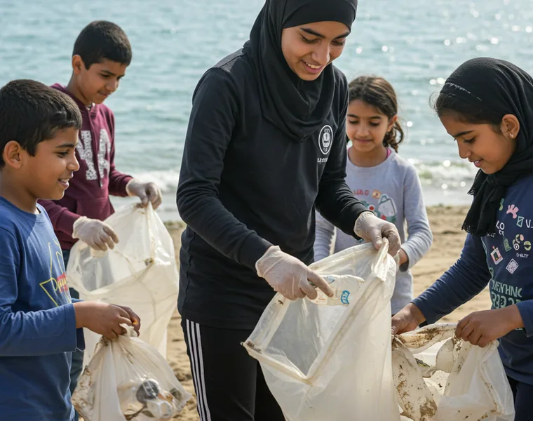
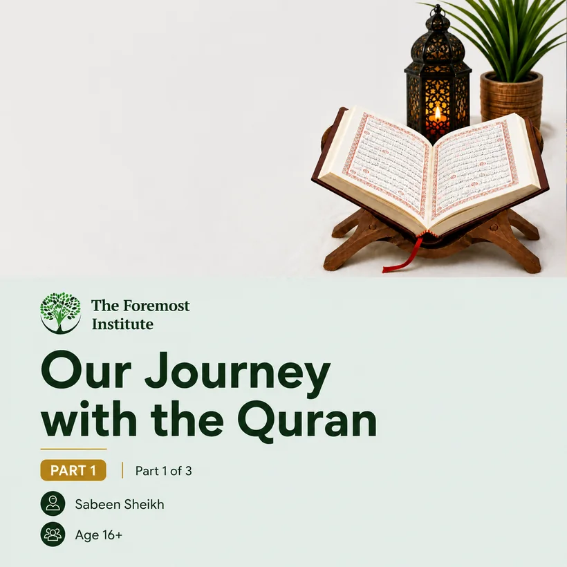
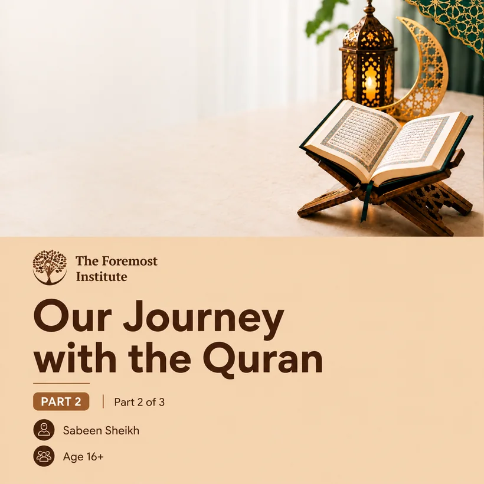
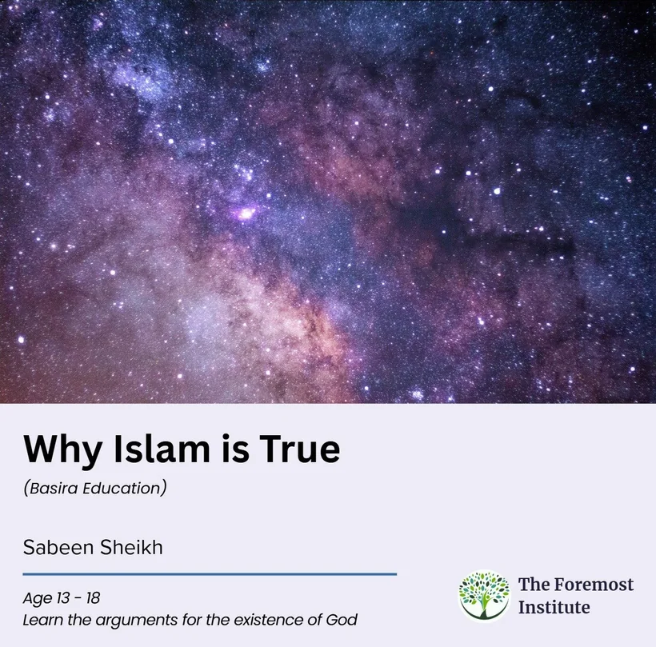
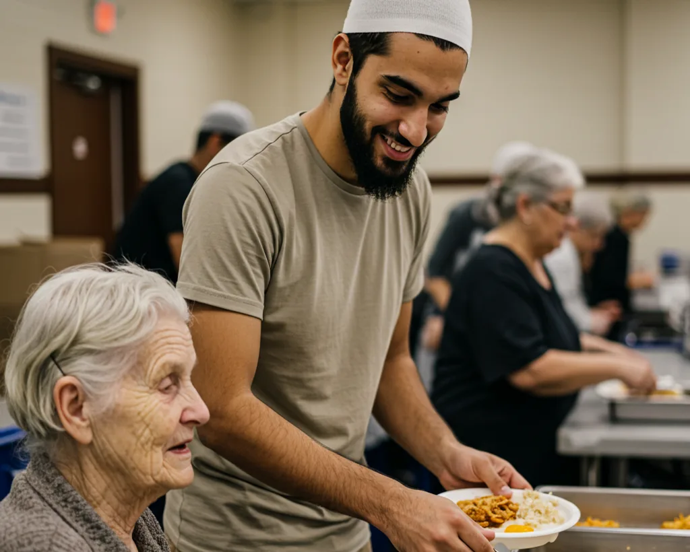

The Sabiqun
The foremost in good. We raise young people who rush towards what is right, rather than waiting to be asked.
Surah Al-Waqi‘ah · 56:10Harrow, London · An institute for young Muslims
We help young Muslims aged 15 and above know their faith deeply, live it with confidence, and serve their communities with excellence.
“And the foremost are the foremost, those are the ones brought near, in the Gardens of Pleasure.”Surah Al-Waqi‘ah · 56:10–12
The Qur’an describes the believers as the foremost in doing good deeds — those who rush to serve, the trailblazers in their community, setting the precedence for others. That is the standard we nurture.
The institute
The Foremost Institute is an educational and service institute bringing the authentic knowledge of Islam to young Muslim adults — from age 15 through university — and helping them apply it in the real world.
Based in Harrow, we are at the beginning of our journey: building a community of thinking Muslims who are confident in their identity, nurtured in service, and ready to create positive change.
What we stand for
We draw our inspiration from the Qur’an and the Sunnah of the Prophet Muhammad (peace be upon him) — shaping young people who are rooted, purposeful and outwardly generous.
The foremost in good. We raise young people who rush towards what is right, rather than waiting to be asked.
Surah Al-Waqi‘ah · 56:10Belief paired with righteous deeds is the heart of a life lived well. Knowledge should move the heart — and the hands.
Surah Al-Baqarah · 2:82The Muslihoon go beyond personal righteousness to create change that ripples through family, community and society.
Surah Hud · 11:117Like the date palm: firmly rooted, upright in character, and bearing good that nourishes everyone around it.
Surah Ibrahim · 14:24Our approach
Our approach is a journey, not a checklist. Each phase builds on the last — shaping the mind, the heart, the hands and the will to lead.
 01 · Learn
01 · Learn
Foundation courses in the Qur’an, the life of the Prophet (peace be upon him) and belief — taught in an engaging, reflective way.
We make space to think, question and connect divine knowledge to the realities of everyday life.

03 · ServeCommunity-based service with local partners — from soup kitchens and elderly care to environmental stewardship.
 04 · Lead
04 · Lead
Skill-building and mentoring that helps young adults become vehicles for good in a changing world.
Courses
Thoughtfully designed for young adults aged 15 through university. Begin with the Qur’an, the life of the Prophet (peace be upon him), or the foundations of belief.

Qur’an StudiesA reflective study of the 30th Juz — beginning with Surah Al-Fatiha and the last ten surahs, grounded in traditional tafsir.

Qur’an StudiesContinue from Surah Al-Humazah to Surah Ash-Shams, with a deeper study of context, language and daily application.
 Islamic History
Islamic History
A thorough study of the Prophet’s life and mission, drawing out timeless lessons for the challenges Muslims face today.

BeliefA structured, evidence-based exploration of why Islam is true — the arguments for God and answers to contemporary questions.
Founder & Teacher
Alimiyya · Ijaza in Hadith, Tafseer & Fiqh
Our teacher
“After more than 15 years of Islamic learning, Sabeen set up the Institute to bring her knowledge of the Islamic sciences to young Muslim students.”
Sabeen began her journey at Nurul Ilm Academy in Dubai, graduating with an Alimiyya degree in 2014. She has since studied with Cambridge Islamic College, Utrujj Foundation, Arabica Institute, the London College of Islamic Studies and Basira Education — and is a student of Shaykh Haytham Tamim.
Alongside her studies, she has spent years teaching Islamic circles for teenage girls, volunteering as a teacher at Turning Point Academy, and building community through Sohba Saleha in Harrow.
Meet our teacherFaith in action
Learning is only the beginning. We are building pathways that turn what young people know into how they live, serve and lead.

Partnering with local organisations — soup kitchens, elderly care, refugee support and environmental work — so faith becomes hands-on.
Partner with usSkill-building and mentoring that helps young adults lead with character, competence and a clear sense of purpose.
Shape the programmeQuestions
If you cannot find what you need, we would be glad to hear from you. No question is too small.
Our courses are designed for young Muslims aged 15 and above, through university. Each course page lists its own age guidance, schedule and location.
The foundation courses begin with the essentials and are taught in an accessible, reflective way. Part 2 of Our Journey with the Quran is best suited to students who have completed Part 1 or already know the early surahs.
Some courses run online; others meet in Harrow. Classes are interactive, with discussion, group activities and weekly quizzes. Each course page has the full schedule and venue.
Course fees are paid monthly over eight months, and current fees are shown on each course card and course page. Please contact us if you would like help choosing the right course.
Visit the course page and follow the registration steps, or email info@theforemostinstitute.com and we will guide you through it.
Begin here
Places are limited and each cohort is intentionally small. Find the course that meets you where you are.